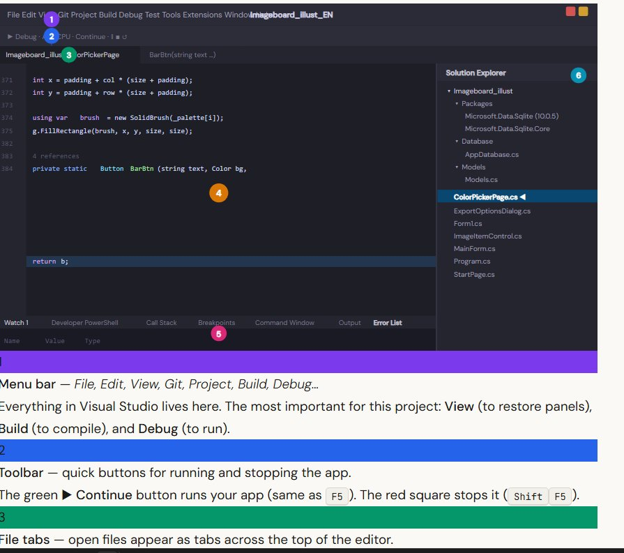
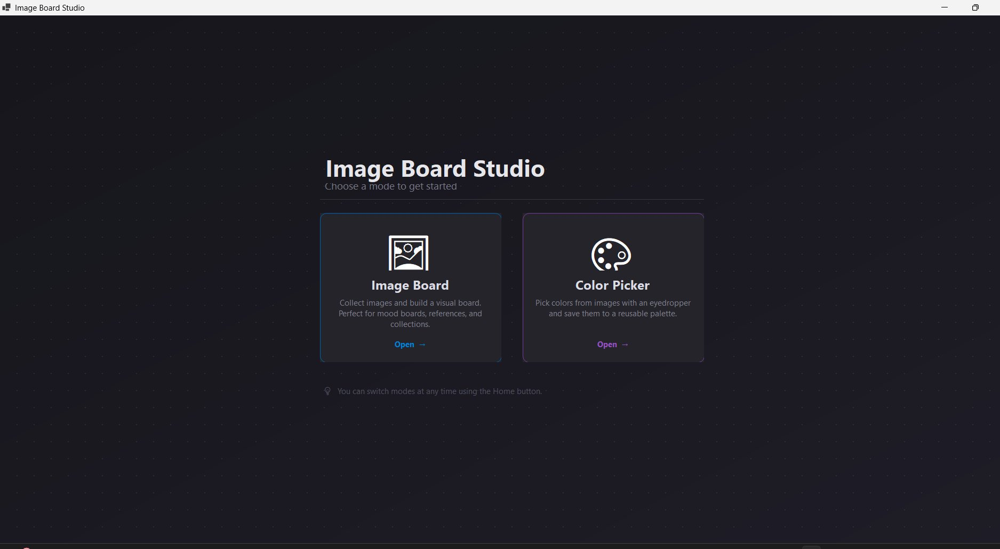
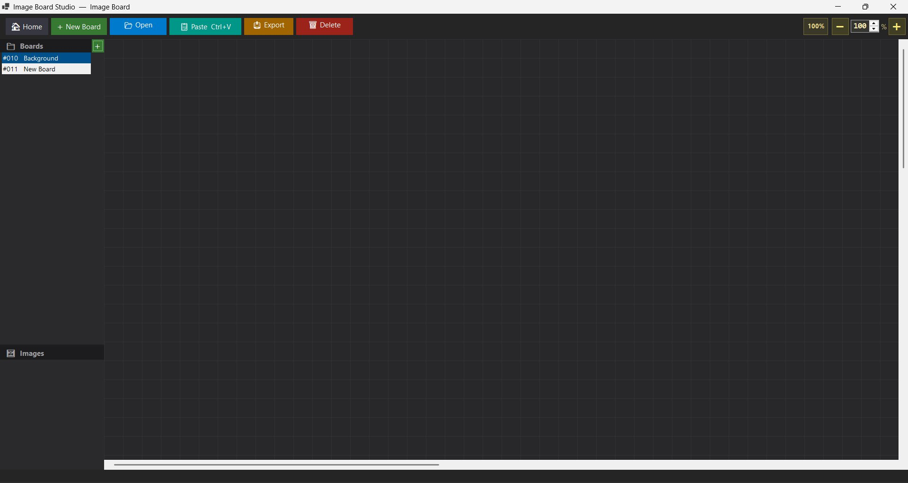

Building an Artist Tool
In this tutorial you will build Image Board Studio from scratch — a desktop app for artists to collect visual references and pick colors from images. No coding experience needed. Every step is explained.
What is C#? C# (pronounced "C sharp") is a programming language made by Microsoft. It is one of the most popular languages for building Windows desktop apps.
What is Windows Forms? Windows Forms (WinForms) is a toolkit that comes with C#. It lets you build windows with buttons, panels, and images by writing code instead of dragging things in a designer.
What is SQLite? SQLite is a tiny database that saves data into a single file on your computer — like a spreadsheet, but for your app. No setup or server needed.
What You'll Build
The finished app has three screens the user can switch between:
- Start Page — a landing screen with two clickable mode cards
- Image Board — a large scrollable canvas where you drag, drop, and resize images. Boards are saved to a database so they persist when you close the app.
- Color Picker — load any image and click on it to sample colors. Build a reusable palette and copy the hex codes.
Project Structure
Here is every file in the finished project. Don't worry about understanding all of it now — you will create each file step by step. This is just a map so you know where you are headed.
.cs file shows all the classes and methods inside it — very useful for navigating large projects.Step 1 — Install Visual Studio
Visual Studio is the program you write C# code in. Think of it like Microsoft Word, but for code. We use the free Community edition — it has everything we need and costs nothing.
Open your browser and go to:
You will see the Visual Studio Community page. Click the white Download button.
Community
This downloads a small file called VisualStudioSetup.exe. Run it to launch the installer.
The installer opens a Workloads screen — a list of tool bundles for different project types. You will see sections called Web & Cloud and Desktop & Mobile.
Scroll down to Desktop & Mobile and check only this one:
Click Install at the bottom right. This takes 10–20 minutes depending on your internet speed. When it finishes, click Launch.
Visual Studio will ask you to sign in with a Microsoft account. This is optional — click "Not now, maybe later" to skip it. The app is completely free without signing in.
Click the blue Install button at the bottom right of the installer. The download and setup takes 10–20 minutes depending on your internet speed. You can see the progress in the installer window.
When it finishes, click Launch to open Visual Studio for the first time.
Visual Studio will ask you to sign in with a Microsoft account. This is optional — click "Not now, maybe later" to skip it. The app is completely free without signing in.
Step 2 — Create the Project
A project is the folder that holds all your code files. A solution is a container that holds one or more projects. Visual Studio creates both at once.
On the Visual Studio start screen, click Create a new project. In the search box at the top, type Windows Forms. Select the template that says:
Make sure the small tag says C# (not Visual Basic). Click Next.
Fill in the details exactly like this:
- Project name:
Imageboard_illust - Location: anywhere you like (e.g. your Desktop or Documents)
- Framework:
.NET 10.0 (Windows)
Click Create. Visual Studio generates the project and opens it.
In the Solution Explorer panel (right side), you'll see two auto-generated files:
Form1.cs— a blank window. We will keep this for now.Program.cs— the entry point. This is the first code that runs when you press Play.
Form1.cs yet — Visual Studio needs it. We will replace it with our own MainForm later.Step 3 — Create Folders & Files
Before writing any code, create the folder and file structure. Right-clicking in Solution Explorer is how you add everything.
In Solution Explorer, right-click the project name (Imageboard_illust) → Add → New Folder → type Database → press Enter.
Then right-click the Database folder → Add → Class… → name it AppDatabase.cs → click Add.
Same steps: right-click the project → Add → New Folder → name it Models. Then right-click the Models folder → Add → Class… → name it Models.cs.
Right-click the project (not a folder) → Add → Class… for each of these files:
StartPage.csImageItemControl.csColorPickerPage.csExportOptionsDialog.csMainForm.cs
When done, your Solution Explorer should match the project structure shown in the introduction.
Step 4 — Install the SQLite Package
Your project needs a library to talk to SQLite. Libraries in C# are installed through NuGet, which is like an app store for code packages. Your project uses version 10.0.5 (visible in your Solution Explorer under Packages).
In the top menu bar, click:
A new tab opens showing packages you can install.
Click the Browse tab. In the search box type Microsoft.Data.Sqlite. Click the first result. On the right side, check the box next to your project name. Click Install and accept any prompts.
Step 5 — Understanding Visual Studio's UI
Before writing code, take 5 minutes to get familiar with the panels. The diagram below maps the key areas — each number matches the description below it.

Everything in Visual Studio lives here. The most important for this project: View (to restore panels), Build (to compile), and Debug (to run).
The green ▶ Continue button runs your app (same as F5). The red square stops it (ShiftF5).
Click any tab to switch to that file. Middle-click (or click the ✕) to close it.
Line numbers are on the left. Keywords are coloured (purple/blue). Errors show as red underlines. Press CtrlSpace to force an autocomplete suggestion.
Error List — all compile errors. Double-click any error to jump to it.
Output — build messages and logs.
Developer PowerShell / Terminal — built-in command prompt.
Click any
.cs file to open it. Click the arrow to expand and see classes and methods. Right-click to add, rename, or delete files.
Panels can be accidentally closed or moved. If anything is missing, go to in the menu bar and click the panel you want back. Every panel in Visual Studio is listed there with its keyboard shortcut.
| Panel | Shortcut |
|---|---|
| Solution Explorer | CtrlAltL |
| Error List | Ctrl\ E |
| Output | CtrlAltO |
| Terminal | Ctrl` |
| Git Changes | Ctrl0 G |
- F5 — build and run (opens the app window)
- ShiftF5 — stop the app
- CtrlShiftB — build without running (checks for errors only)
Part 1 — Data Models
A model is a C# class that describes the shape of your data. Think of it like a form — it defines what fields exist. Open Models/Models.cs and replace all the content with the code below.
A Board is one named workspace (like a Photoshop document). A BoardItem is a single image card placed on that board, with its position and size.
namespace Imageboard_illust.Models
{
public class Board
{
public int Id { get; set; }
public string Name { get; set; } = "";
public string CreatedAt { get; set; } = "";
// Returns the folder path where this board's images are stored
public string ImagesDir(string dataDir)
=> Path.Combine(dataDir, "boards", Id.ToString(), "images");
}
public class BoardItem
{
public int Id { get; set; }
public int BoardId { get; set; }
public string Name { get; set; } = "";
public string FileName { get; set; } = "";
public int X, Y, Width, Height, ZOrder;
}
}{ get; set; } means the property can be read and written from outside the class. This is standard C# for model classes.Part 2 — Database
Open Database/AppDatabase.cs. This class is responsible for all reading and writing to the SQLite file. It opens a connection when the app starts and keeps it open until the app closes.
The constructor finds the user's AppData folder, creates a .db file there, and runs CREATE TABLE IF NOT EXISTS — which creates the tables only if they don't already exist, so it's safe to call every time the app starts.
using Microsoft.Data.Sqlite;
using Imageboard_illust.Models;
public class AppDatabase : IDisposable
{
private readonly SqliteConnection _conn;
public string DataDir { get; }
public AppDatabase()
{
DataDir = Path.Combine(
Environment.GetFolderPath(
Environment.SpecialFolder.ApplicationData),
"ImageBoardStudio");
Directory.CreateDirectory(DataDir);
_conn = new SqliteConnection(
$"Data Source={Path.Combine(DataDir, "app.db")}");
_conn.Open();
InitSchema();
}
private void InitSchema()
{
Exec(@"CREATE TABLE IF NOT EXISTS boards (
id INTEGER PRIMARY KEY AUTOINCREMENT,
name TEXT NOT NULL,
created_at TEXT DEFAULT (datetime('now'))
);");
Exec(@"CREATE TABLE IF NOT EXISTS board_items (
id INTEGER PRIMARY KEY AUTOINCREMENT,
board_id INTEGER NOT NULL,
name TEXT, filename TEXT,
x INT, y INT, w INT, h INT,
z_order INT DEFAULT 0
);");
}
// Helper: run a SQL command with no return value
private void Exec(string sql)
{
using var cmd = _conn.CreateCommand();
cmd.CommandText = sql;
cmd.ExecuteNonQuery();
}
public void Dispose() => _conn.Dispose();
}Add these methods to the same class. They let you insert boards and read them back:
public int InsertBoard(string name)
{
using var cmd = _conn.CreateCommand();
cmd.CommandText =
"INSERT INTO boards (name) VALUES ($n); SELECT last_insert_rowid();";
cmd.Parameters.AddWithValue("$n", name);
return (int)(long)cmd.ExecuteScalar()!;
}
public List<Board> GetBoards()
{
var list = new List<Board>();
using var cmd = _conn.CreateCommand();
cmd.CommandText =
"SELECT id, name, created_at FROM boards ORDER BY id;";
using var r = cmd.ExecuteReader();
while (r.Read())
list.Add(new Board {
Id = r.GetInt32(0),
Name = r.GetString(1),
CreatedAt = r.GetString(2)
});
return list;
}Part 3 — Start Page
Open StartPage.cs. This is the landing screen — a Panel that fills the window. It fires events when the user clicks a card, which MainForm listens to.

Events are how one class tells another "something happened." Here we define two — one per mode card:
public class StartPage : Panel
{
public event EventHandler? ImageBoardChosen;
public event EventHandler? ColorPickerChosen;
}The Paint event fires every time the panel needs to redraw. We draw a gradient and a subtle dot grid over it:
Paint += (_, e) =>
{
using var br = new LinearGradientBrush(
ClientRectangle,
Color.FromArgb(22, 22, 28),
Color.FromArgb(30, 28, 38),
LinearGradientMode.ForwardDiagonal);
e.Graphics.FillRectangle(br, ClientRectangle);
using var dot = new SolidBrush(
Color.FromArgb(35, 255, 255, 255));
const int gap = 32;
for (int x = gap; x < Width; x += gap)
for (int y = gap; y < Height; y += gap)
e.Graphics.FillEllipse(dot, x-1, y-1, 2, 2);
};Invalidate() on the control to schedule a repaint. Without it, the change won't appear on screen.Part 4 — Image Item Control
Open ImageItemControl.cs. This is one draggable image card on the canvas. It is a Panel subclass with its own title bar, a close button, and 8-directional resize handles.
Looking at your Solution Explorer, you can see the key members this class contains:
Item : BoardItem— the data for this card (position, size, filename)_pictureBox : PictureBox— displays the image_titleBar : Panel— the draggable bar at the top_closeBtn : Button— the × button to remove the cardResizeDir— an enum with directions: None, N, S, E, W, NE, NW, SE, SWDeleteRequested/BringToFrontRequested— events fired to the parent canvas
An enum is a named list of options. This one describes which edge or corner the user is dragging to resize:
public enum ResizeDir
{
None, // not resizing
N, S, E, W, // top, bottom, right, left edges
NE, NW, SE, SW // corners
}The title bar handles dragging. On MouseDown we save where the drag started; on MouseMove we update the card's position:
private void TitleBar_Down(object? s, MouseEventArgs e)
{
_isDragging = true;
_dragStartScreen = Cursor.Position;
_dragStartLocation = Location;
}
private void TitleBar_Move(object? s, MouseEventArgs e)
{
if (!_isDragging) return;
var delta = new Point(
Cursor.Position.X - _dragStartScreen.X,
Cursor.Position.Y - _dragStartScreen.Y);
Location = new Point(
_dragStartLocation.X + delta.X,
_dragStartLocation.Y + delta.Y);
BringToFrontRequested?.Invoke(this, EventArgs.Empty);
}Part 5 — Image Board
The ImageBoardPage class lives inside MainForm.cs. It contains the toolbar, sidebar, canvas, and status bar.
